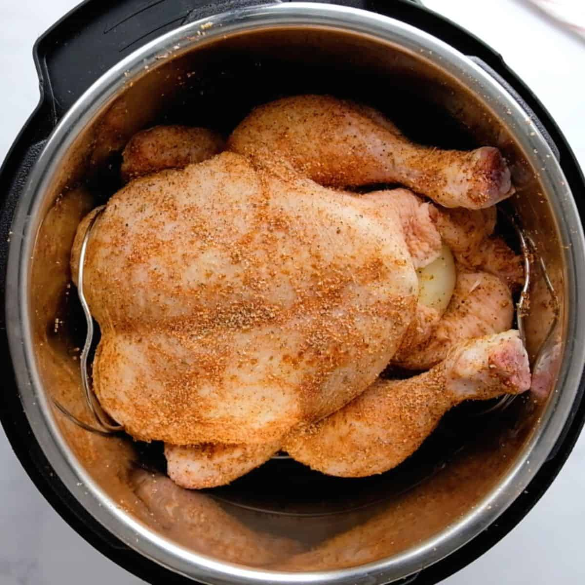

Home
Whole Chicken Instant Pot

Description:
Make a juicy 6lb whole chicken in the Instant Pot in just 36 minutes!
Ingredients
- 1 Whole Chicken - 6 lbs
- (Optional) 1 Onion
- (Optional) 1 lemon
- (Optional) 4 garlic cloves
- (Optional) Salt and Spices
Optional Spice List:
- Salt
- Black pepper
- Crushed Red Pepper
- Paprika
- Old Bay
- Garlic Powder
- Onion Powder
- Rosemary
- Parsley
- Hot sauce or hot spices
Steps:
- Prepare whole chicken. Remove innards.
- Prepare Instant Pot with metal rack and 2 cups of water
- (Optional) Cut lemon and onion in quarters. Stuff into chicken insides.
- (Optional) Stuff 4 garlic cloves into chicken insides.
- Place whole chicken into Instant Pot.
- (Optional) Sprinkle 2 tbs of Salt onto chicken.
- (Optional) Sprinkle 1 tbs of each listed Spice onto chicken.
- (Optional) If using onion and garlic, omit Garlic Powder and Onion Powder.
- (Optional) Add hot sauce if desired.
- Close Instant Pot lid and SET VENT TO SEALED.
- Click "Pressure Cook" and set timer to 36 minutes.
- Timer is calculated by 6 mins times weight of chicken. (6*6=36mins)
- Unclick "keep warm" setting.
- Wait for pressure cooker to shut off.
- DO NOT VENT STEAM
- Let pressure cooker cool down naturally while leaving lid sealed.
- When cooled, steam vent will open. The chicken is ready to cut and be served.
- Enjoy!